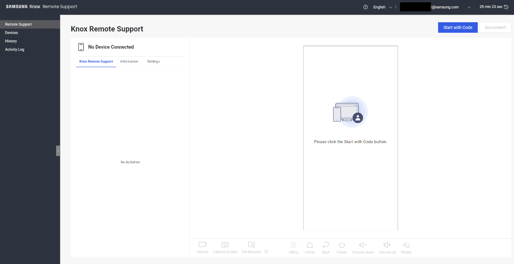
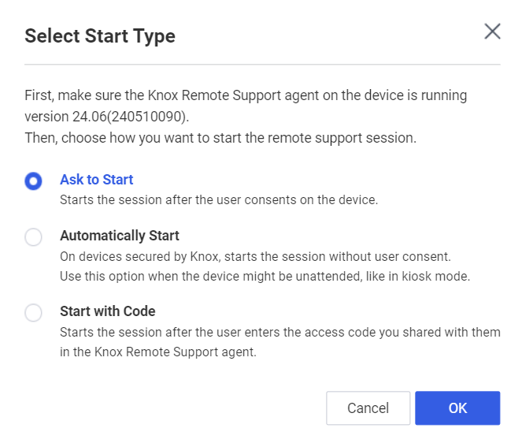
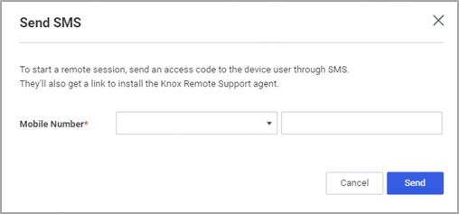

Knox Remote Support viewer
Last updated September 25th, 2024
If device users need additional troubleshooting and support from you, they may request a remote support session. During this session, you can connect directly to their device from your computer and run diagnostics or fix issues remotely.
As specified in the minimum requirements, you need a Knox account to access the Devices menu in the Knox Remote Support viewer.
Access the Knox Remote Support viewer from the Knox Admin Portal
There are two ways to access the Knox Remote Support viewer from the Knox Admin Portal:
- In the navigation menu, click Knox Remote Support.
- On the Device information screen that shows after you search for a device, click KNOX REMOTE SUPPORT.
Start a remote session with device user permission
Make sure you complete the appropriate steps under Install and enable the Knox Remote Support agent before you follow these steps.
To ask a device user to start a remote support session:
- In the Knox Admin Portal navigation menu, click Knox Remote Support.
- In the navigation menu, click Devices.
- Select the device to provide remote support to.
- Click Ask to Start.
The device user is then notified that you want to start a remote support session. If they accept, you can control the device with the Viewer in Remote Support.
Automatically start a remote session
You can initiate a remote session on a device without the intervention of a device user. This option is used to manage devices without requiring an on-site device user to start the session.
This feature only applies to Samsung devices that support the Knox platform.
Make sure you complete the appropriate steps under Install and enable the Knox Remote Support agent before you follow these steps.
To automatically start a remote support session on a device:
- In the Knox Admin Portal navigation menu, click Knox Remote Support.
- In the navigation menu, click Devices.
- Select the device to provide remote support to.
- Click Automatically Start.
The remote support session then starts, and you can control the device with the Viewer in Remote Support.
Start a remote session using access code
You can request a remote session on any device associated with your Knox Suite license, even if it’s not enrolled in a UEM. To do so, you can send an SMS to the device user with instructions on how to start the session.
-
On the Knox Admin Portal navigation pane, click Knox Remote Support.
-
Select the device to which you need to provide remote support.
-
Click Start with Code.

-
Choose a method to send the access code to the device user:
-
You share the access code with the device user directly, and instruct the device user to enter the access code in the Knox Remote Support agent on the device.
-
Click Send SMS to send an SMS to the device. The SMS contains link to install the Knox Remote Support agent and an access code required to enter to start the remote session.
If you need to start a remote session on a device that doesn’t have an associated phone number listed in KRS, go to Devices on the navigation pane and manually add the phone number in the Mobile Number field. Then, when you click Send, the code required to start the session is sent to this newly added phone number.
-
After the device user enters the access code, you can then control the target device using the Knox Remote Support viewer.
Access the Knox Remote Support viewer from Knox Manage
Knox Manage supports several ways to start a remote session on a device, you can:
- Automatically start
- Ask users to start
- Start with access code
Once you initiate a session on a device, you can access its remote support history and a log of all Knox Remote Support events from the navigation pane.
Automatically start or ask to start a remote session
If the device is fully managed or fully managed with a work profile, you can start a remote session without an access code, using the Automatically Start or Ask to Start option. With the Automatically start option, you can begin a remote session and manage devices without the intervention of a device user. For example, you can use this option to manage devices without requiring an on-site device user to start the session. Make sure you complete the appropriate steps under Install and enable the Knox Remote Support agent before you follow these steps.
-
On the Knox Manage navigation pane, go to the Device.
-
Select a device.
-
Click Knox Remote Support.
-
A dialog shows the available start type options depending on the device’s status and manufacturer. Select an option, then click OK.

Depending on the start type option you select, a remote session is started as follows:
Start type Description Ask to start After you click OK, the device user is prompted to accept the connection request. Once they accept, the remote session starts. Automatically start This option is only available for Samsung devices that support Knox. After you click OK, the remote session starts immediately. Start with Code After you click OK, the device user needs to enter the access code to begin the remote session.
You can only use the start types for which you have required permission. If you don’t have permission for using a start type, it is disabled.
Start a remote session through an access code
You can request a remote session on any device in your Knox Manage console, including devices managed by the Android Management API, even if it’s not currently enrolled. The device user either needs to install the Knox Remote Support agent or, if it’s already installed, enter a six-digit access code in the agent.
To start a remote session with an access code:
-
On the Knox Manage navigation pane, go to Device.
-
Select a device.
-
Click Knox Remote Support.
-
In the Knox Remote Support, choose a method to send the access code to the device user:
-
If you click Send, without entering the device’s mobile number, then you need to share the access code with the device user directly.
-
Enter the device’s mobile number, then click Start with Code > OK to send an SMS to the device user containing a link to install the Knox Remote Support Agent and the access code they need to enter to start the remote session.

-
-
A dialog showing a six-digit access code appears.
Control devices with the Knox Remote Support viewer
To remotely control a device with the Knox Remote Support viewer:
-
Instruct the device user to install the latest version of the Knox Remote Support agent, and instruct the device user to enter the access code.
-
Connect to the device. Upon successfully connecting, you can see the connected device’s information and set the transfer quality.
Tab Description Knox Remote Support See a history of device activities for the device that’s currently connected, such as connection times, recordings, screen captures, and file transfer processes. Information See detailed device information, such as the device model name, IMEI, serial number, OS version, Knox SDK installation status, and the Knox Remote Support agent running area. Settings Set the transfer quality. By default, the transfer quality value is set to Automatic. You can also select 30%, 50%, or 100% for this value. If you select Automatic, dynamically-sized data can be transferred using the Quality of Service (QoS) method according to the network conditions, which improves the network’s data transfer quality. The response time may slow down as the transfer quality improves. -
Perform IT service or support activities to the device using this viewer. For more information about the functions of the Knox Remote Support viewer, see Use the functions of the Knox Remote Support viewer.
By default, there’s a 30-minute time limit for each Knox Remote Support session. You can reset the time limit by clicking the clock icon. Five minutes before you reach the time limit, a pop up opens to ask whether you want to extend the session. If you choose to extend it, your session’s timer is restarted. Otherwise, your session ends after five minutes.
-
To end the session and cease remote support, instruct the device user to tap Stop on the screen, or click Disconnect in the Knox Remote Support viewer on your computer.
Use the functions of the Knox Remote Support viewer
When the Knox Remote Support viewer successfully connects to the Knox Remote Support Agent, a live view of the device’s screen shows on the Knox Remote Support viewer.
If the device screen is locked, then the viewer shows the following error message:
The screen is turned off. Press the Power button to start.
In this case, limited functions are supported, those being Record, File browser, Home, and the Power button.
The Knox Remote Support service provides the following functions:
- Control device buttons
- Record the device screen
- Capture the device screen
- Transfer files
Control device buttons
The Menu, Home, Back, Power, Volume Down / Up and Rotate buttons at the bottom behave like the softkeys and hardkeys on the device. Click the buttons to trigger the associated action on the device. For example, clicking the Back button in the viewer returns the device to the previous screen. If the device screen is locked, you can click the Home button to unlock the screen.
Record the device screen
You can record the device’s screen to find out if errors are occurring on the device. Recorded videos are saved in WEBM format, with a file name that contains an administrator ID, tenant ID, device name, and the date and time of the recording. For example, admin@stage.com_Ara S21 (SM-G991N)_20220523155102.webm.
You can record up to ten minutes of video. Network QoS isn’t available while recording is in progress. If the maximum recording time is exceeded, a notification shows and the recording stops.
To record the device screen:
- At the bottom of the screen, click Record.
- Click Rec to start recording a video. The recording time shows on the Record card on the left side of the screen, and the user is notified that the screen is being recorded on their device.
- Click Pause to pause the recording or click End to finish the recording. If you click Pause the Restart and End controls become available. Click Restart to discard the recording and start over.
Capture the device screen
Click Capture Screen to take a snapshot of the device screen. Captured files are saved in JPG format, with a file name that contains information and identifiers about the admin, tenant, device name, and the date and time of the capture. For example, admin@stage.com_Tomek_Android_1_20220523154804.jpg.
- When providing remote support from the Knox Admin Portal, the file name includes information about the Samsung Account information.
- When providing remote support from the Knox Manage console, the file name includes the admin ID and tenant ID.
Knox Remote Support can’t capture the screen of apps that make use of the FLAG_SECURE flag in the Android window manager.
Transfer files
You can transfer files, such as log files, from a device to your computer to check the condition of the device. Files can also be transferred from your file system to the device. Up to 200 MB of files can be transferred at a time. Files transferred to the device are saved to the Downloads directory in its internal storage, and files transferred to your computer are saved according to the web browser’s download manager.
To transfer files from the device to your computer:
- In the toolbar of the Knox Remote Support viewer, click File Browser.
- On the device, instruct the device user to accept the request to run the file browser.
- Click a file to transfer it immediately. If you want to transfer multiple files at once, click and hold each file to select them for transfer, then click Select.
To transfer files from your computer to the device, drag the files from your desktop or file explorer onto the live view.
To view a log of transferred files for the remote session, in the Transfer File card, click Detail. A list of file names and sizes opens.
Rotate the device screen
To change the orientation of the device’s screen to landscape or portrait mode, click Rotate at the bottom of the screen. The device’s screen won’t rotate if the Home screen or the focused app doesn’t support screen rotation.
Support session history
To view a log of all support sessions, click History in the left navigation pane. A session’s device information is tracked, including the model name, device ID, and phone number.
In the Details column for a session, click View to see detailed session data, like the duration, the version of the device’s OS, and the version of the Knox Remote Support agent installed on the device. You can filter the history by date, filter by the device’s IMEI or serial number, or search for a specific session. Click Download History as CSV to save the log data for your query as a spreadsheet file.
You can also adjust the time zone of Knox Remote Support to vary from your computer’s local time zone. To adjust the time zone, click your account name, select Time Zone, then select a region.
See also
On this page
Is this page helpful?